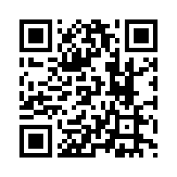
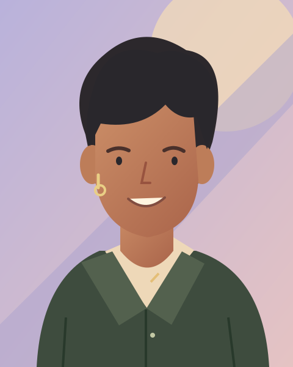

01 ↗
♫ Cùng playlist☕ Cùng quán quen✦ Cùng là chính mình✳
Gặp người cùng gu.
Khám phá hồ sơ, sở thích và tìm một điểm chung để bắt đầu cuộc trò chuyện.
Một lời chào. Một người cùng tần số.
Một nơi để bạn thoải mái là chính mình.

Quét để cài trên điện thoạiMở camera và hướng vào mã QR
 kinnect♧
kinnect♧
Cùng tần sốCà phê • Âm nhạc • Là chính mình
Từ người lạ đến người quen.
Kinnect giúp câu chuyện bắt đầu tự nhiên hơn.
Khám phá hồ sơ, sở thích và tìm một điểm chung để bắt đầu cuộc trò chuyện.
Theo dõi nhau, gửi lời chào và giữ những cuộc trò chuyện riêng ở một nơi.
Một bài hát, một khoảnh khắc, một câu chuyện. Để cộng đồng hiểu bạn hơn.
Không cần một phiên bản hoàn hảo để bắt đầu. Chỉ cần bạn, những điều bạn thích và một chút tò mò về người ở phía bên kia.
Chọn sở thích, viết giới thiệu và quyết định xuất hiện trong mục Khám phá.
Tùy chọn nhận tin nhắn, chặn và báo cáo giúp bạn chủ động hơn khi kết nối.
Tôn trọng danh tính, quyền riêng tư và sự đồng thuận của nhau.
Gặp nhau trong phòng live, trò chuyện và chia sẻ những khoảnh khắc của bạn.
Đang hoàn thiện livestreamBản thử nghiệm có phòng và chat trực tiếp. Video qua Internet vẫn đang được hoàn thiện và kiểm thử.
Những điều cần biết
trước lời chào đầu tiên.
Kinnect hướng đến người từ 18 tuổi thuộc cộng đồng LGBT và những người tôn trọng sự đa dạng. Mọi kết nối cần sự đồng thuận và tôn trọng lẫn nhau.
Kinnect đang ở giai đoạn thử nghiệm Android. Bạn có thể mở bản web đang chạy để trải nghiệm. APK được cung cấp qua trang phát hành GitHub khi có bản sẵn sàng; hiện chưa phát hành chính thức trên Google Play. Xem trang Hỗ trợ để biết cách cài và cập nhật.
Hồ sơ, bài viết và tin nhắn riêng được lưu tại máy chủ Kinnect do chủ dự án vận hành. Hiện chưa có mã hóa đầu cuối. Bạn có thể điều chỉnh quyền xuất hiện trong Khám phá và quyền nhận tin nhắn trong Hồ sơ.
Có. Bạn có thể chặn hoặc báo cáo từ hồ sơ, mục Khám phá và các nội dung được hỗ trợ. Báo cáo được xử lý thủ công; bản thử nghiệm chưa có đội kiểm duyệt liên tục 24/7.
Chưa. Phòng live và chat đã có trong bản thử nghiệm, nhưng video giữa các mạng khác nhau vẫn cần bổ sung hạ tầng chuyển tiếp và kiểm thử trên thiết bị thật.
Mang theo sự tò mò. Còn lời chào, để mình bắt đầu.
Bản thử nghiệm · Android & web iOS · Dành cho người từ 18 tuổi